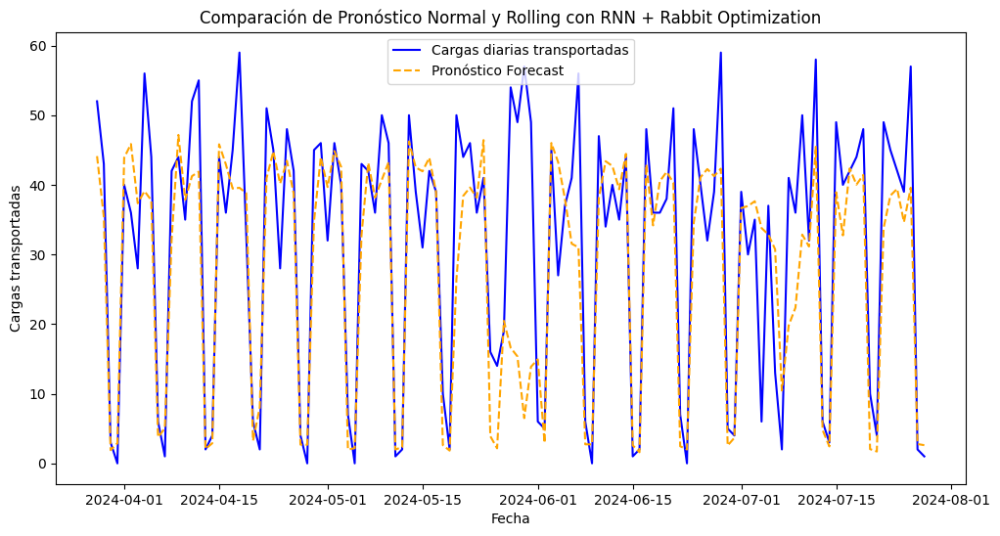

<!DOCTYPE html>


<html lang="en" data-content_root="./" >

  <head>
    <meta charset="utf-8" />
    <meta name="viewport" content="width=device-width, initial-scale=1.0" /><meta name="viewport" content="width=device-width, initial-scale=1" />

    <title>Modelo mejorado para pronóstico de serie de tiempo &#8212; Proyecto final</title>
  
  
  
  <script data-cfasync="false">
    document.documentElement.dataset.mode = localStorage.getItem("mode") || "";
    document.documentElement.dataset.theme = localStorage.getItem("theme") || "";
  </script>
  
  <!-- Loaded before other Sphinx assets -->
  <link href="_static/styles/theme.css?digest=dfe6caa3a7d634c4db9b" rel="stylesheet" />
<link href="_static/styles/bootstrap.css?digest=dfe6caa3a7d634c4db9b" rel="stylesheet" />
<link href="_static/styles/pydata-sphinx-theme.css?digest=dfe6caa3a7d634c4db9b" rel="stylesheet" />

  
  <link href="_static/vendor/fontawesome/6.5.2/css/all.min.css?digest=dfe6caa3a7d634c4db9b" rel="stylesheet" />
  <link rel="preload" as="font" type="font/woff2" crossorigin href="_static/vendor/fontawesome/6.5.2/webfonts/fa-solid-900.woff2" />
<link rel="preload" as="font" type="font/woff2" crossorigin href="_static/vendor/fontawesome/6.5.2/webfonts/fa-brands-400.woff2" />
<link rel="preload" as="font" type="font/woff2" crossorigin href="_static/vendor/fontawesome/6.5.2/webfonts/fa-regular-400.woff2" />

    <link rel="stylesheet" type="text/css" href="_static/pygments.css?v=fa44fd50" />
    <link rel="stylesheet" type="text/css" href="_static/styles/sphinx-book-theme.css?v=a3416100" />
    <link rel="stylesheet" type="text/css" href="_static/togglebutton.css?v=13237357" />
    <link rel="stylesheet" type="text/css" href="_static/copybutton.css?v=76b2166b" />
    <link rel="stylesheet" type="text/css" href="_static/mystnb.4510f1fc1dee50b3e5859aac5469c37c29e427902b24a333a5f9fcb2f0b3ac41.css" />
    <link rel="stylesheet" type="text/css" href="_static/sphinx-thebe.css?v=4fa983c6" />
    <link rel="stylesheet" type="text/css" href="_static/sphinx-design.min.css?v=95c83b7e" />
  
  <!-- Pre-loaded scripts that we'll load fully later -->
  <link rel="preload" as="script" href="_static/scripts/bootstrap.js?digest=dfe6caa3a7d634c4db9b" />
<link rel="preload" as="script" href="_static/scripts/pydata-sphinx-theme.js?digest=dfe6caa3a7d634c4db9b" />
  <script src="_static/vendor/fontawesome/6.5.2/js/all.min.js?digest=dfe6caa3a7d634c4db9b"></script>

    <script src="_static/documentation_options.js?v=9eb32ce0"></script>
    <script src="_static/doctools.js?v=9a2dae69"></script>
    <script src="_static/sphinx_highlight.js?v=dc90522c"></script>
    <script src="_static/clipboard.min.js?v=a7894cd8"></script>
    <script src="_static/copybutton.js?v=f281be69"></script>
    <script src="_static/scripts/sphinx-book-theme.js?v=887ef09a"></script>
    <script>let toggleHintShow = 'Click to show';</script>
    <script>let toggleHintHide = 'Click to hide';</script>
    <script>let toggleOpenOnPrint = 'true';</script>
    <script src="_static/togglebutton.js?v=4a39c7ea"></script>
    <script>var togglebuttonSelector = '.toggle, .admonition.dropdown';</script>
    <script src="_static/design-tabs.js?v=f930bc37"></script>
    <script>const THEBE_JS_URL = "https://unpkg.com/thebe@0.8.2/lib/index.js"; const thebe_selector = ".thebe,.cell"; const thebe_selector_input = "pre"; const thebe_selector_output = ".output, .cell_output"</script>
    <script async="async" src="_static/sphinx-thebe.js?v=c100c467"></script>
    <script>var togglebuttonSelector = '.toggle, .admonition.dropdown';</script>
    <script>const THEBE_JS_URL = "https://unpkg.com/thebe@0.8.2/lib/index.js"; const thebe_selector = ".thebe,.cell"; const thebe_selector_input = "pre"; const thebe_selector_output = ".output, .cell_output"</script>
    <script>DOCUMENTATION_OPTIONS.pagename = 'improved_model';</script>
    <link rel="index" title="Index" href="genindex.html" />
    <link rel="search" title="Search" href="search.html" />
    <link rel="prev" title="Modelos de redes neuronales" href="nn.html" />
  <meta name="viewport" content="width=device-width, initial-scale=1"/>
  <meta name="docsearch:language" content="en"/>
  </head>
  
  
  <body data-bs-spy="scroll" data-bs-target=".bd-toc-nav" data-offset="180" data-bs-root-margin="0px 0px -60%" data-default-mode="">

  
  
  <div id="pst-skip-link" class="skip-link d-print-none"><a href="#main-content">Skip to main content</a></div>
  
  <div id="pst-scroll-pixel-helper"></div>
  
  <button type="button" class="btn rounded-pill" id="pst-back-to-top">
    <i class="fa-solid fa-arrow-up"></i>Back to top</button>

  
  <input type="checkbox"
          class="sidebar-toggle"
          id="pst-primary-sidebar-checkbox"/>
  <label class="overlay overlay-primary" for="pst-primary-sidebar-checkbox"></label>
  
  <input type="checkbox"
          class="sidebar-toggle"
          id="pst-secondary-sidebar-checkbox"/>
  <label class="overlay overlay-secondary" for="pst-secondary-sidebar-checkbox"></label>
  
  <div class="search-button__wrapper">
    <div class="search-button__overlay"></div>
    <div class="search-button__search-container">
<form class="bd-search d-flex align-items-center"
      action="search.html"
      method="get">
  <i class="fa-solid fa-magnifying-glass"></i>
  <input type="search"
         class="form-control"
         name="q"
         id="search-input"
         placeholder="Search this book..."
         aria-label="Search this book..."
         autocomplete="off"
         autocorrect="off"
         autocapitalize="off"
         spellcheck="false"/>
  <span class="search-button__kbd-shortcut"><kbd class="kbd-shortcut__modifier">Ctrl</kbd>+<kbd>K</kbd></span>
</form></div>
  </div>

  <div class="pst-async-banner-revealer d-none">
  <aside id="bd-header-version-warning" class="d-none d-print-none" aria-label="Version warning"></aside>
</div>

  
    <header class="bd-header navbar navbar-expand-lg bd-navbar d-print-none">
    </header>
  

  <div class="bd-container">
    <div class="bd-container__inner bd-page-width">
      
      
      
      <div class="bd-sidebar-primary bd-sidebar">
        

  
  <div class="sidebar-header-items sidebar-primary__section">
    
    
    
    
  </div>
  
    <div class="sidebar-primary-items__start sidebar-primary__section">
        <div class="sidebar-primary-item">

  
    
  

<a class="navbar-brand logo" href="intro.html">
  
  
  
  
  
  
    <p class="title logo__title">Proyecto final</p>
  
</a></div>
        <div class="sidebar-primary-item">

 <script>
 document.write(`
   <button class="btn search-button-field search-button__button" title="Search" aria-label="Search" data-bs-placement="bottom" data-bs-toggle="tooltip">
    <i class="fa-solid fa-magnifying-glass"></i>
    <span class="search-button__default-text">Search</span>
    <span class="search-button__kbd-shortcut"><kbd class="kbd-shortcut__modifier">Ctrl</kbd>+<kbd class="kbd-shortcut__modifier">K</kbd></span>
   </button>
 `);
 </script></div>
        <div class="sidebar-primary-item"><nav class="bd-links bd-docs-nav" aria-label="Main">
    <div class="bd-toc-item navbar-nav active">
        
        <ul class="nav bd-sidenav bd-sidenav__home-link">
            <li class="toctree-l1">
                <a class="reference internal" href="intro.html">
                    Proyecto Final - Series de Tiempo 202430
                </a>
            </li>
        </ul>
        <ul class="current nav bd-sidenav">
<li class="toctree-l1"><a class="reference internal" href="data_prep.html">Análisis cualitativo y preparación de la base de datos</a></li>
<li class="toctree-l1"><a class="reference internal" href="eda.html">Análisis exploratorio de la Serie de Tiempo</a></li>
<li class="toctree-l1"><a class="reference internal" href="smoothing.html">Modelos de Suavización Exponencial</a></li>
<li class="toctree-l1"><a class="reference internal" href="arima.html">Modelos autorregresivo integrado de media móvil</a></li>
<li class="toctree-l1"><a class="reference internal" href="nn.html">Modelos de redes neuronales</a></li>
<li class="toctree-l1 current active"><a class="current reference internal" href="#">Modelo mejorado para pronóstico de serie de tiempo</a></li>
</ul>

    </div>
</nav></div>
    </div>
  
  
  <div class="sidebar-primary-items__end sidebar-primary__section">
  </div>
  
  <div id="rtd-footer-container"></div>


      </div>
      
      <main id="main-content" class="bd-main" role="main">
        
        

<div class="sbt-scroll-pixel-helper"></div>

          <div class="bd-content">
            <div class="bd-article-container">
              
              <div class="bd-header-article d-print-none">
<div class="header-article-items header-article__inner">
  
    <div class="header-article-items__start">
      
        <div class="header-article-item"><button class="sidebar-toggle primary-toggle btn btn-sm" title="Toggle primary sidebar" data-bs-placement="bottom" data-bs-toggle="tooltip">
  <span class="fa-solid fa-bars"></span>
</button></div>
      
    </div>
  
  
    <div class="header-article-items__end">
      
        <div class="header-article-item">

<div class="article-header-buttons">


<div class="dropdown dropdown-source-buttons">
  <button class="btn dropdown-toggle" type="button" data-bs-toggle="dropdown" aria-expanded="false" aria-label="Source repositories">
    <i class="fab fa-github"></i>
  </button>
  <ul class="dropdown-menu">
      
      
      
      <li><a href="https://github.com/executablebooks/jupyter-book" target="_blank"
   class="btn btn-sm btn-source-repository-button dropdown-item"
   title="Source repository"
   data-bs-placement="left" data-bs-toggle="tooltip"
>
  

<span class="btn__icon-container">
  <i class="fab fa-github"></i>
  </span>
<span class="btn__text-container">Repository</span>
</a>
</li>
      
      
      
      
      <li><a href="https://github.com/executablebooks/jupyter-book/issues/new?title=Issue%20on%20page%20%2Fimproved_model.html&body=Your%20issue%20content%20here." target="_blank"
   class="btn btn-sm btn-source-issues-button dropdown-item"
   title="Open an issue"
   data-bs-placement="left" data-bs-toggle="tooltip"
>
  

<span class="btn__icon-container">
  <i class="fas fa-lightbulb"></i>
  </span>
<span class="btn__text-container">Open issue</span>
</a>
</li>
      
  </ul>
</div>


<div class="dropdown dropdown-download-buttons">
  <button class="btn dropdown-toggle" type="button" data-bs-toggle="dropdown" aria-expanded="false" aria-label="Download this page">
    <i class="fas fa-download"></i>
  </button>
  <ul class="dropdown-menu">
      
      
      
      <li><a href="_sources/improved_model.ipynb" target="_blank"
   class="btn btn-sm btn-download-source-button dropdown-item"
   title="Download source file"
   data-bs-placement="left" data-bs-toggle="tooltip"
>
  

<span class="btn__icon-container">
  <i class="fas fa-file"></i>
  </span>
<span class="btn__text-container">.ipynb</span>
</a>
</li>
      
      
      
      
      <li>
<button onclick="window.print()"
  class="btn btn-sm btn-download-pdf-button dropdown-item"
  title="Print to PDF"
  data-bs-placement="left" data-bs-toggle="tooltip"
>
  

<span class="btn__icon-container">
  <i class="fas fa-file-pdf"></i>
  </span>
<span class="btn__text-container">.pdf</span>
</button>
</li>
      
  </ul>
</div>


<button onclick="toggleFullScreen()"
  class="btn btn-sm btn-fullscreen-button"
  title="Fullscreen mode"
  data-bs-placement="bottom" data-bs-toggle="tooltip"
>
  

<span class="btn__icon-container">
  <i class="fas fa-expand"></i>
  </span>

</button>


<script>
document.write(`
  <button class="btn btn-sm nav-link pst-navbar-icon theme-switch-button" title="light/dark" aria-label="light/dark" data-bs-placement="bottom" data-bs-toggle="tooltip">
    <i class="theme-switch fa-solid fa-sun fa-lg" data-mode="light"></i>
    <i class="theme-switch fa-solid fa-moon fa-lg" data-mode="dark"></i>
    <i class="theme-switch fa-solid fa-circle-half-stroke fa-lg" data-mode="auto"></i>
  </button>
`);
</script>


<script>
document.write(`
  <button class="btn btn-sm pst-navbar-icon search-button search-button__button" title="Search" aria-label="Search" data-bs-placement="bottom" data-bs-toggle="tooltip">
    <i class="fa-solid fa-magnifying-glass fa-lg"></i>
  </button>
`);
</script>
<button class="sidebar-toggle secondary-toggle btn btn-sm" title="Toggle secondary sidebar" data-bs-placement="bottom" data-bs-toggle="tooltip">
    <span class="fa-solid fa-list"></span>
</button>
</div></div>
      
    </div>
  
</div>
</div>
              
              

<div id="jb-print-docs-body" class="onlyprint">
    <h1>Modelo mejorado para pronóstico de serie de tiempo</h1>
    <!-- Table of contents -->
    <div id="print-main-content">
        <div id="jb-print-toc">
            
            <div>
                <h2> Contents </h2>
            </div>
            <nav aria-label="Page">
                <ul class="visible nav section-nav flex-column">
<li class="toc-h2 nav-item toc-entry"><a class="reference internal nav-link" href="#cargue-de-datos-y-funciones-complementarias">1. Cargue de datos y funciones complementarias</a></li>
<li class="toc-h2 nav-item toc-entry"><a class="reference internal nav-link" href="#artificial-rabbits-optimization-algorithm">2. Artificial Rabbits Optimization Algorithm</a></li>
<li class="toc-h2 nav-item toc-entry"><a class="reference internal nav-link" href="#generacion-de-los-modelos">3. Generación de los modelos</a></li>
<li class="toc-h2 nav-item toc-entry"><a class="reference internal nav-link" href="#pronostico-con-mejor-modelo-generado">4. Pronóstico con mejor modelo generado</a></li>
<li class="toc-h2 nav-item toc-entry"><a class="reference internal nav-link" href="#conclusiones-y-trabajos-futuros">5. Conclusiones y trabajos futuros</a></li>
</ul>
            </nav>
        </div>
    </div>
</div>

              
                
<div id="searchbox"></div>
                <article class="bd-article">
                  
  <div class="cell docutils container">
<div class="cell_input docutils container">
<div class="highlight-ipython3 notranslate"><div class="highlight"><pre><span></span><span class="kn">import</span> <span class="nn">sys</span>
<span class="kn">import</span> <span class="nn">pandas</span> <span class="k">as</span> <span class="nn">pd</span>
<span class="kn">import</span> <span class="nn">numpy</span> <span class="k">as</span> <span class="nn">np</span>
<span class="kn">from</span> <span class="nn">matplotlib</span> <span class="kn">import</span> <span class="n">pyplot</span> <span class="k">as</span> <span class="n">plt</span>
<span class="kn">import</span> <span class="nn">seaborn</span> <span class="k">as</span> <span class="nn">sns</span>
<span class="kn">import</span> <span class="nn">datetime</span>
<span class="kn">from</span> <span class="nn">sklearn.preprocessing</span> <span class="kn">import</span> <span class="n">MinMaxScaler</span>
<span class="kn">import</span> <span class="nn">tensorflow</span> <span class="k">as</span> <span class="nn">tf</span>
<span class="kn">import</span> <span class="nn">math</span>
<span class="kn">from</span> <span class="nn">tensorflow</span> <span class="kn">import</span> <span class="n">keras</span>
<span class="kn">from</span> <span class="nn">keras.layers</span> <span class="kn">import</span> <span class="n">Dense</span><span class="p">,</span> <span class="n">Input</span><span class="p">,</span> <span class="n">Dropout</span>
<span class="kn">from</span> <span class="nn">keras.optimizers</span> <span class="kn">import</span> <span class="n">SGD</span>
<span class="kn">from</span> <span class="nn">keras.models</span> <span class="kn">import</span> <span class="n">Model</span>
<span class="kn">from</span> <span class="nn">keras.models</span> <span class="kn">import</span> <span class="n">load_model</span>
<span class="kn">from</span> <span class="nn">keras.callbacks</span> <span class="kn">import</span> <span class="n">ModelCheckpoint</span>
<span class="kn">import</span> <span class="nn">os</span>
<span class="kn">from</span> <span class="nn">sklearn.metrics</span> <span class="kn">import</span> <span class="n">r2_score</span>
<span class="kn">from</span> <span class="nn">sklearn.metrics</span> <span class="kn">import</span> <span class="n">mean_absolute_error</span>
<span class="kn">import</span> <span class="nn">warnings</span>
<span class="n">warnings</span><span class="o">.</span><span class="n">filterwarnings</span><span class="p">(</span><span class="s2">&quot;ignore&quot;</span><span class="p">)</span>
<span class="kn">from</span> <span class="nn">joblib</span> <span class="kn">import</span> <span class="n">dump</span><span class="p">,</span> <span class="n">load</span>
<span class="kn">from</span> <span class="nn">statsmodels.graphics.tsaplots</span> <span class="kn">import</span> <span class="n">plot_acf</span><span class="p">,</span> <span class="n">plot_pacf</span>
<span class="kn">import</span> <span class="nn">re</span>
<span class="kn">from</span> <span class="nn">keras.layers</span> <span class="kn">import</span> <span class="n">LSTM</span>
<span class="kn">from</span> <span class="nn">sklearn.metrics</span> <span class="kn">import</span> <span class="n">mean_absolute_error</span>
<span class="kn">from</span> <span class="nn">sklearn.metrics</span> <span class="kn">import</span> <span class="n">mean_squared_error</span>
<span class="kn">from</span> <span class="nn">sklearn.metrics</span> <span class="kn">import</span> <span class="n">r2_score</span>
<span class="kn">from</span> <span class="nn">statsmodels.stats.diagnostic</span> <span class="kn">import</span> <span class="n">acorr_ljungbox</span>
<span class="kn">from</span> <span class="nn">statsmodels.stats.stattools</span> <span class="kn">import</span> <span class="n">jarque_bera</span>
<span class="kn">import</span> <span class="nn">statsmodels.api</span> <span class="k">as</span> <span class="nn">sm</span>
<span class="kn">from</span> <span class="nn">tensorflow.keras.layers</span> <span class="kn">import</span> <span class="n">Dense</span><span class="p">,</span> <span class="n">Dropout</span><span class="p">,</span> <span class="n">Input</span>
<span class="kn">from</span> <span class="nn">tensorflow.keras.optimizers</span> <span class="kn">import</span> <span class="n">Adam</span>
<span class="kn">from</span> <span class="nn">tensorflow.keras.losses</span> <span class="kn">import</span> <span class="n">MeanSquaredError</span>
<span class="kn">from</span> <span class="nn">tensorflow.keras.callbacks</span> <span class="kn">import</span> <span class="n">EarlyStopping</span>
<span class="kn">from</span> <span class="nn">tensorflow.keras.models</span> <span class="kn">import</span> <span class="n">Sequential</span>
<span class="kn">from</span> <span class="nn">tensorflow.keras.layers</span> <span class="kn">import</span> <span class="n">SimpleRNN</span><span class="p">,</span> <span class="n">Dropout</span>
<span class="kn">import</span> <span class="nn">pywt</span>
</pre></div>
</div>
</div>
</div>
<section class="tex2jax_ignore mathjax_ignore" id="modelo-mejorado-para-pronostico-de-serie-de-tiempo">
<h1>Modelo mejorado para pronóstico de serie de tiempo<a class="headerlink" href="#modelo-mejorado-para-pronostico-de-serie-de-tiempo" title="Link to this heading">#</a></h1>
<p>Una vez hemos hecho el despliegue de los distintos modelos de Suavización, ARIMA y Redes Neuronales, es momento de presentar un modelo mejorado de pronóstico, con el que podamos conseguir el menor MAE posible. Para ello citamos el artículo académico de Burak Gülmez, Stock price prediction with optimized deep LSTM network with artificial rabbits optimization algorithm <a class="reference external" href="https://www.sciencedirect.com/science/article/pii/S0957417423008485">[Fuente]</a>. En este artículo el autor hace uso de un modelo de selección de mejores parámetros para entrenar su modelo LSTM.</p>
<p>En nuestro caso y dado el análisis anterior, no vamos a buscar encontrar mejores parámetros para el modelo LSTM, sino para el modelo RNN, además los parámetros que buscamos mejorar solo será el número de neuronas y la tasa de drop_out, dado que las épocas quedarán fijas en 25.</p>
<section id="cargue-de-datos-y-funciones-complementarias">
<h2>1. Cargue de datos y funciones complementarias<a class="headerlink" href="#cargue-de-datos-y-funciones-complementarias" title="Link to this heading">#</a></h2>
<p>Vamos a cargar los datos de nuestra serie de tiempo, así como funciones complementarias que hemos utilizado en otros capítulos.</p>
<div class="cell docutils container">
<div class="cell_input docutils container">
<div class="highlight-ipython3 notranslate"><div class="highlight"><pre><span></span><span class="n">df</span><span class="o">=</span><span class="n">pd</span><span class="o">.</span><span class="n">read_excel</span><span class="p">(</span><span class="s2">&quot;loadsts.xlsx&quot;</span><span class="p">)</span>
<span class="n">df</span><span class="o">.</span><span class="n">index</span> <span class="o">=</span> <span class="n">df</span><span class="p">[</span><span class="s1">&#39;Posted_date&#39;</span><span class="p">]</span>
<span class="n">df</span><span class="o">.</span><span class="n">index</span><span class="o">.</span><span class="n">freq</span> <span class="o">=</span> <span class="s1">&#39;D&#39;</span>
<span class="n">ts</span> <span class="o">=</span> <span class="n">df</span><span class="p">[</span><span class="s1">&#39;Loads&#39;</span><span class="p">]</span>

<span class="n">df</span><span class="p">[</span><span class="s1">&#39;loads_escaler&#39;</span><span class="p">]</span> <span class="o">=</span> <span class="n">df</span><span class="p">[</span><span class="s1">&#39;Loads&#39;</span><span class="p">]</span>
<span class="n">scaler</span> <span class="o">=</span> <span class="n">MinMaxScaler</span><span class="p">(</span><span class="n">feature_range</span><span class="o">=</span><span class="p">(</span><span class="mi">0</span><span class="p">,</span> <span class="mi">1</span><span class="p">))</span>
<span class="n">ts_esc</span> <span class="o">=</span> <span class="n">scaler</span><span class="o">.</span><span class="n">fit_transform</span><span class="p">(</span><span class="n">np</span><span class="o">.</span><span class="n">array</span><span class="p">(</span><span class="n">df</span><span class="p">[</span><span class="s1">&#39;loads_escaler&#39;</span><span class="p">])</span><span class="o">.</span><span class="n">reshape</span><span class="p">(</span><span class="o">-</span><span class="mi">1</span><span class="p">,</span> <span class="mi">1</span><span class="p">))</span>
</pre></div>
</div>
</div>
</div>
<div class="cell docutils container">
<div class="cell_input docutils container">
<div class="highlight-ipython3 notranslate"><div class="highlight"><pre><span></span><span class="k">def</span> <span class="nf">makeXy</span><span class="p">(</span><span class="n">ts</span><span class="p">,</span> <span class="n">nbtimesteps</span><span class="p">):</span>
    <span class="n">X</span> <span class="o">=</span> <span class="p">[]</span>
    <span class="n">y</span> <span class="o">=</span> <span class="p">[]</span>
    <span class="k">for</span> <span class="n">i</span> <span class="ow">in</span> <span class="nb">range</span><span class="p">(</span><span class="n">nbtimesteps</span><span class="p">,</span> <span class="n">ts</span><span class="o">.</span><span class="n">shape</span><span class="p">[</span><span class="mi">0</span><span class="p">]):</span>
        <span class="n">X</span><span class="o">.</span><span class="n">append</span><span class="p">(</span><span class="nb">list</span><span class="p">(</span><span class="n">ts</span><span class="p">[</span><span class="n">i</span><span class="o">-</span><span class="n">nbtimesteps</span><span class="p">:</span><span class="n">i</span><span class="o">-</span><span class="mi">1</span><span class="p">]))</span> <span class="c1">#Regressors</span>
        <span class="n">y</span><span class="o">.</span><span class="n">append</span><span class="p">(</span><span class="n">ts</span><span class="p">[</span><span class="n">i</span><span class="p">])</span> <span class="c1">#Target</span>
    <span class="n">X</span><span class="p">,</span> <span class="n">y</span> <span class="o">=</span> <span class="n">np</span><span class="o">.</span><span class="n">array</span><span class="p">(</span><span class="n">X</span><span class="p">),</span> <span class="n">np</span><span class="o">.</span><span class="n">array</span><span class="p">(</span><span class="n">y</span><span class="p">)</span>
    <span class="k">return</span> <span class="n">X</span><span class="p">,</span> <span class="n">y</span>
</pre></div>
</div>
</div>
</div>
<div class="cell docutils container">
<div class="cell_input docutils container">
<div class="highlight-ipython3 notranslate"><div class="highlight"><pre><span></span><span class="k">def</span> <span class="nf">split</span><span class="p">(</span><span class="n">serie</span><span class="p">,</span> <span class="n">trainportion</span><span class="p">):</span>
    <span class="n">perct</span> <span class="o">=</span> <span class="n">math</span><span class="o">.</span><span class="n">ceil</span><span class="p">(</span><span class="nb">len</span><span class="p">(</span><span class="n">ts</span><span class="p">)</span> <span class="o">*</span> <span class="n">trainportion</span><span class="p">)</span>
    <span class="n">perc2</span> <span class="o">=</span> <span class="n">math</span><span class="o">.</span><span class="n">ceil</span><span class="p">(</span><span class="nb">len</span><span class="p">(</span><span class="n">ts</span><span class="p">)</span><span class="o">*</span><span class="p">((</span><span class="mi">1</span> <span class="o">-</span> <span class="n">trainportion</span><span class="p">)</span><span class="o">/</span><span class="mi">2</span><span class="p">))</span>
    <span class="n">train</span> <span class="o">=</span> <span class="n">serie</span><span class="p">[</span><span class="mi">0</span><span class="p">:</span><span class="n">perct</span><span class="p">]</span>
    <span class="n">validation</span> <span class="o">=</span> <span class="n">serie</span><span class="p">[</span><span class="n">perct</span><span class="p">:</span><span class="n">perct</span><span class="o">+</span><span class="n">perc2</span><span class="p">]</span>
    <span class="n">test</span> <span class="o">=</span> <span class="n">serie</span><span class="p">[</span><span class="n">perct</span><span class="o">+</span><span class="n">perc2</span><span class="p">:]</span>
    <span class="k">return</span> <span class="n">train</span><span class="p">,</span> <span class="n">validation</span><span class="p">,</span> <span class="n">test</span>
</pre></div>
</div>
</div>
</div>
<div class="cell docutils container">
<div class="cell_input docutils container">
<div class="highlight-ipython3 notranslate"><div class="highlight"><pre><span></span><span class="k">def</span> <span class="nf">errors</span><span class="p">(</span><span class="n">y_pred</span><span class="p">,</span> <span class="n">y_real</span><span class="p">):</span>
    
    <span class="n">mae</span> <span class="o">=</span> <span class="n">mean_absolute_error</span><span class="p">(</span><span class="n">y_real</span><span class="p">,</span> <span class="n">y_pred</span><span class="p">)</span>
    <span class="n">mape</span> <span class="o">=</span> <span class="mi">100</span><span class="o">*</span><span class="p">(</span><span class="nb">sum</span><span class="p">(</span><span class="nb">abs</span><span class="p">(((</span><span class="n">y_real</span> <span class="o">-</span> <span class="n">y_pred</span><span class="p">)</span><span class="o">/</span><span class="n">y_real</span><span class="p">)))</span><span class="o">/</span><span class="nb">len</span><span class="p">(</span><span class="n">y_real</span><span class="p">))</span>
    <span class="n">mse</span> <span class="o">=</span> <span class="n">mean_squared_error</span><span class="p">(</span><span class="n">y_real</span> <span class="p">,</span> <span class="n">y_pred</span><span class="p">)</span>
    <span class="n">rmse</span> <span class="o">=</span> <span class="n">np</span><span class="o">.</span><span class="n">sqrt</span><span class="p">(</span><span class="n">mse</span><span class="p">)</span>
    <span class="n">r2</span> <span class="o">=</span> <span class="n">r2_score</span><span class="p">(</span><span class="n">y_real</span><span class="p">,</span> <span class="n">y_pred</span><span class="p">)</span>
    
    <span class="k">return</span> <span class="n">mae</span><span class="p">,</span> <span class="n">mape</span><span class="p">,</span> <span class="n">mse</span><span class="p">,</span> <span class="n">rmse</span><span class="p">,</span> <span class="n">r2</span>
</pre></div>
</div>
</div>
</div>
<p>Además, agregamos al código, las funciones de creación de redes recurrentes y de selección del mejor modelo, con el fin de complementar la selección de modelos por parte del optimizador.</p>
<div class="cell docutils container">
<div class="cell_input docutils container">
<div class="highlight-ipython3 notranslate"><div class="highlight"><pre><span></span><span class="k">def</span> <span class="nf">create_RNN</span><span class="p">(</span><span class="n">neurons</span><span class="p">,</span> <span class="n">shape</span><span class="p">,</span> <span class="n">dropout_rate</span><span class="p">):</span> <span class="c1">#Creación RNN</span>
    <span class="n">model_RNN</span> <span class="o">=</span> <span class="n">Sequential</span><span class="p">()</span>
    <span class="n">model_RNN</span><span class="o">.</span><span class="n">add</span><span class="p">(</span><span class="n">SimpleRNN</span><span class="p">(</span><span class="n">neurons</span><span class="p">,</span> <span class="n">input_shape</span><span class="o">=</span><span class="p">(</span><span class="n">shape</span><span class="p">,</span><span class="mi">1</span><span class="p">),</span> <span class="n">activation</span><span class="o">=</span><span class="s1">&#39;relu&#39;</span><span class="p">))</span>
    <span class="n">model_RNN</span><span class="o">.</span><span class="n">add</span><span class="p">(</span><span class="n">Dropout</span><span class="p">(</span><span class="n">dropout_rate</span><span class="p">))</span>
    <span class="n">model_RNN</span><span class="o">.</span><span class="n">add</span><span class="p">(</span><span class="n">Dense</span><span class="p">(</span><span class="mi">1</span><span class="p">,</span> <span class="n">activation</span><span class="o">=</span><span class="s1">&#39;linear&#39;</span><span class="p">))</span>
    <span class="n">model_RNN</span><span class="o">.</span><span class="n">compile</span><span class="p">(</span><span class="n">loss</span><span class="o">=</span><span class="s1">&#39;mean_squared_error&#39;</span><span class="p">,</span> <span class="n">optimizer</span><span class="o">=</span><span class="s1">&#39;adam&#39;</span><span class="p">)</span>

    <span class="k">return</span> <span class="n">model_RNN</span>
</pre></div>
</div>
</div>
</div>
<div class="cell docutils container">
<div class="cell_input docutils container">
<div class="highlight-ipython3 notranslate"><div class="highlight"><pre><span></span><span class="k">def</span> <span class="nf">select_model</span><span class="p">(</span><span class="n">model</span><span class="p">,</span> <span class="n">ep</span><span class="p">,</span> <span class="n">X_train</span><span class="p">,</span> <span class="n">y_train</span><span class="p">,</span> <span class="n">X_val</span><span class="p">,</span> <span class="n">y_val</span><span class="p">):</span>

    <span class="n">save_weights_at</span> <span class="o">=</span> <span class="n">os</span><span class="o">.</span><span class="n">path</span><span class="o">.</span><span class="n">join</span><span class="p">(</span><span class="s1">&#39;keras_models&#39;</span><span class="p">,</span> <span class="sa">f</span><span class="s1">&#39;</span><span class="si">{</span><span class="n">model</span><span class="o">.</span><span class="n">name</span><span class="si">}</span><span class="s1">_</span><span class="se">{{</span><span class="s1">epoch:02d</span><span class="se">}}</span><span class="s1">-</span><span class="se">{{</span><span class="s1">val_loss:.4f</span><span class="se">}}</span><span class="s1">.keras&#39;</span><span class="p">)</span>
    <span class="n">save_best</span> <span class="o">=</span> <span class="n">ModelCheckpoint</span><span class="p">(</span><span class="n">save_weights_at</span><span class="p">,</span> <span class="n">monitor</span><span class="o">=</span><span class="s1">&#39;val_loss&#39;</span><span class="p">,</span> <span class="n">verbose</span><span class="o">=</span><span class="mi">0</span><span class="p">,</span>
                            <span class="n">save_best_only</span><span class="o">=</span><span class="kc">True</span><span class="p">,</span> <span class="n">save_weights_only</span><span class="o">=</span><span class="kc">False</span><span class="p">,</span> <span class="n">mode</span><span class="o">=</span><span class="s1">&#39;min&#39;</span><span class="p">,</span> <span class="n">save_freq</span><span class="o">=</span><span class="s1">&#39;epoch&#39;</span><span class="p">);</span>
    
    <span class="n">history_filename</span> <span class="o">=</span> <span class="n">os</span><span class="o">.</span><span class="n">path</span><span class="o">.</span><span class="n">join</span><span class="p">(</span><span class="s1">&#39;historynn&#39;</span><span class="p">,</span> <span class="sa">f</span><span class="s1">&#39;history_</span><span class="si">{</span><span class="n">model</span><span class="o">.</span><span class="n">name</span><span class="si">}</span><span class="s1">.joblib&#39;</span><span class="p">)</span>
    <span class="n">history_airp</span> <span class="o">=</span> <span class="kc">None</span>

    <span class="k">if</span> <span class="n">os</span><span class="o">.</span><span class="n">path</span><span class="o">.</span><span class="n">exists</span><span class="p">(</span><span class="n">history_filename</span><span class="p">):</span>
        <span class="n">history_filename</span> <span class="o">=</span> <span class="n">history_filename</span>
        <span class="nb">print</span><span class="p">(</span><span class="s2">&quot;El archivo &#39;</span><span class="si">{history_filename}</span><span class="s2">&#39; ya existe. Se ha cargado el historial del entrenamiento.&quot;</span><span class="p">)</span>
        
    <span class="k">else</span><span class="p">:</span>
        <span class="n">history_airp</span> <span class="o">=</span> <span class="n">model</span><span class="o">.</span><span class="n">fit</span><span class="p">(</span><span class="n">x</span><span class="o">=</span><span class="n">X_train</span><span class="p">,</span> <span class="n">y</span><span class="o">=</span><span class="n">y_train</span><span class="p">,</span> <span class="n">batch_size</span><span class="o">=</span><span class="mi">16</span><span class="p">,</span> <span class="n">epochs</span><span class="o">=</span><span class="n">ep</span><span class="p">,</span>
                 <span class="n">verbose</span><span class="o">=</span><span class="mi">2</span><span class="p">,</span> <span class="n">callbacks</span><span class="o">=</span><span class="p">[</span><span class="n">save_best</span><span class="p">],</span> <span class="n">validation_data</span><span class="o">=</span><span class="p">(</span><span class="n">X_val</span><span class="p">,</span> <span class="n">y_val</span><span class="p">),</span>
                 <span class="n">shuffle</span><span class="o">=</span><span class="kc">True</span><span class="p">);</span>
        
        <span class="n">dump</span><span class="p">(</span><span class="n">history_airp</span><span class="o">.</span><span class="n">history</span><span class="p">,</span> <span class="n">history_filename</span><span class="p">)</span>
        <span class="nb">print</span><span class="p">(</span><span class="s2">&quot;El entrenamiento se ha completado y el historial ha sido guardado en &#39;</span><span class="si">{history_filename}</span><span class="s2">&#39;&quot;</span><span class="p">)</span>

    <span class="n">model_dir</span> <span class="o">=</span> <span class="s1">&#39;keras_models&#39;</span>
    <span class="n">files</span> <span class="o">=</span> <span class="n">os</span><span class="o">.</span><span class="n">listdir</span><span class="p">(</span><span class="n">model_dir</span><span class="p">)</span>
    <span class="n">pattern</span> <span class="o">=</span> <span class="sa">rf</span><span class="s2">&quot;</span><span class="si">{</span><span class="n">re</span><span class="o">.</span><span class="n">escape</span><span class="p">(</span><span class="n">model</span><span class="o">.</span><span class="n">name</span><span class="p">)</span><span class="si">}</span><span class="s2">_(\d+)-([\d\.]+)\.keras&quot;</span>
    
    <span class="n">best_val_loss</span> <span class="o">=</span> <span class="nb">float</span><span class="p">(</span><span class="s1">&#39;inf&#39;</span><span class="p">)</span>
    <span class="n">best_model_file</span> <span class="o">=</span> <span class="kc">None</span>
    <span class="n">best_model</span> <span class="o">=</span> <span class="kc">None</span>
    
    <span class="k">for</span> <span class="n">file</span> <span class="ow">in</span> <span class="n">files</span><span class="p">:</span>
        <span class="n">match</span> <span class="o">=</span> <span class="n">re</span><span class="o">.</span><span class="n">match</span><span class="p">(</span><span class="n">pattern</span><span class="p">,</span> <span class="n">file</span><span class="p">)</span>
        <span class="k">if</span> <span class="n">match</span><span class="p">:</span>
            <span class="n">epoch</span> <span class="o">=</span> <span class="nb">int</span><span class="p">(</span><span class="n">match</span><span class="o">.</span><span class="n">group</span><span class="p">(</span><span class="mi">1</span><span class="p">))</span>
            <span class="n">val_loss</span> <span class="o">=</span> <span class="nb">float</span><span class="p">(</span><span class="n">match</span><span class="o">.</span><span class="n">group</span><span class="p">(</span><span class="mi">2</span><span class="p">))</span>
            <span class="k">if</span> <span class="n">val_loss</span> <span class="o">&lt;</span> <span class="n">best_val_loss</span><span class="p">:</span>
                <span class="n">best_val_loss</span> <span class="o">=</span> <span class="n">val_loss</span>
                <span class="n">best_model_file</span> <span class="o">=</span> <span class="n">file</span>

    <span class="k">if</span> <span class="n">best_model_file</span><span class="p">:</span>
        <span class="n">best_model_path</span> <span class="o">=</span> <span class="n">os</span><span class="o">.</span><span class="n">path</span><span class="o">.</span><span class="n">join</span><span class="p">(</span><span class="n">model_dir</span><span class="p">,</span> <span class="n">best_model_file</span><span class="p">)</span>
        <span class="nb">print</span><span class="p">(</span><span class="sa">f</span><span class="s2">&quot;Cargando el mejor modelo: </span><span class="si">{</span><span class="n">best_model_file</span><span class="si">}</span><span class="s2"> con val_loss: </span><span class="si">{</span><span class="n">best_val_loss</span><span class="si">}</span><span class="s2">&quot;</span><span class="p">)</span>
        <span class="n">best_model</span> <span class="o">=</span> <span class="n">load_model</span><span class="p">(</span><span class="n">best_model_path</span><span class="p">)</span>
    <span class="k">else</span><span class="p">:</span>
        <span class="nb">print</span><span class="p">(</span><span class="s2">&quot;No se encontraron archivos de modelos que coincidan con el patrón.&quot;</span><span class="p">)</span>

    <span class="k">return</span> <span class="n">best_model</span>
</pre></div>
</div>
</div>
</div>
<div class="cell docutils container">
<div class="cell_input docutils container">
<div class="highlight-ipython3 notranslate"><div class="highlight"><pre><span></span><span class="c1">#forecast</span>
<span class="k">def</span> <span class="nf">forecast_nw</span><span class="p">(</span><span class="n">best_model</span><span class="p">,</span> <span class="n">X_val</span><span class="p">):</span>
    <span class="n">preds</span> <span class="o">=</span> <span class="n">best_model</span><span class="o">.</span><span class="n">predict</span><span class="p">(</span><span class="n">X_val</span><span class="p">)</span>
    <span class="n">preds</span> <span class="o">=</span> <span class="n">scaler</span><span class="o">.</span><span class="n">inverse_transform</span><span class="p">(</span><span class="n">preds</span><span class="p">)</span>
    <span class="n">preds</span> <span class="o">=</span> <span class="n">np</span><span class="o">.</span><span class="n">squeeze</span><span class="p">(</span><span class="n">preds</span><span class="p">)</span>
    <span class="k">return</span> <span class="n">preds</span>
</pre></div>
</div>
</div>
</div>
<p>De nuevo vamos a hacer una división de 80% para el conjunto de training.</p>
<div class="cell docutils container">
<div class="cell_input docutils container">
<div class="highlight-ipython3 notranslate"><div class="highlight"><pre><span></span><span class="n">train</span><span class="p">,</span> <span class="n">val</span><span class="p">,</span> <span class="n">test</span> <span class="o">=</span> <span class="n">split</span><span class="p">(</span><span class="n">ts</span><span class="p">,</span> <span class="mf">0.8</span><span class="p">)</span>
<span class="n">train_esc</span><span class="p">,</span> <span class="n">val_esc</span><span class="p">,</span> <span class="n">test_esc</span> <span class="o">=</span> <span class="n">split</span><span class="p">(</span><span class="n">ts_esc</span><span class="p">,</span> <span class="mf">0.8</span><span class="p">)</span>
</pre></div>
</div>
</div>
</div>
</section>
<section id="artificial-rabbits-optimization-algorithm">
<h2>2. Artificial Rabbits Optimization Algorithm<a class="headerlink" href="#artificial-rabbits-optimization-algorithm" title="Link to this heading">#</a></h2>
<p>Esta función se encarga de, para cada populación, iterar n veces tomando distintos valores de drop_out y neuronas, y entrenar un modelo RNN para esos parámetros. Cada vez que identifica que la métrica de interés mejoró, en este caso MAE, guarda los valores. Observe que en este caso las neuronas tienen un valor de 50 a 100 y el drop_out de 0.4 a 0.7, esto dados los valores encontrados en la sección preliminar, donde se conoció los valores para los cuales el test obtenía un valor mayor.</p>
<p>Es importante considerar que, en todos los casos, los modelos parametrizados que han superado la validación en primer lugar, no necesariamente presentan buen desempeño durante el testing. De hecho en ningún caso la combinación de parámetros adecuada para la validación se mantuvo en primera posición para el testing.</p>
<div class="cell docutils container">
<div class="cell_input docutils container">
<div class="highlight-ipython3 notranslate"><div class="highlight"><pre><span></span><span class="k">class</span> <span class="nc">ArtificialRabbitsOptimizer</span><span class="p">:</span>
    <span class="k">def</span> <span class="fm">__init__</span><span class="p">(</span><span class="bp">self</span><span class="p">,</span> <span class="n">population_size</span><span class="p">,</span> <span class="n">n_iterations</span><span class="p">):</span>
        <span class="bp">self</span><span class="o">.</span><span class="n">population_size</span> <span class="o">=</span> <span class="n">population_size</span>
        <span class="bp">self</span><span class="o">.</span><span class="n">n_iterations</span> <span class="o">=</span> <span class="n">n_iterations</span>

    <span class="k">def</span> <span class="nf">optimize</span><span class="p">(</span><span class="bp">self</span><span class="p">,</span> <span class="n">X_train</span><span class="p">,</span> <span class="n">y_train</span><span class="p">,</span> <span class="n">X_val</span><span class="p">,</span> <span class="n">y_val</span><span class="p">):</span>
        <span class="n">best_parameters</span> <span class="o">=</span> <span class="kc">None</span>
        <span class="n">best_score</span> <span class="o">=</span> <span class="nb">float</span><span class="p">(</span><span class="s1">&#39;inf&#39;</span><span class="p">)</span>
        <span class="n">i</span><span class="o">=</span><span class="mi">0</span>
        <span class="k">for</span> <span class="n">_</span> <span class="ow">in</span> <span class="nb">range</span><span class="p">(</span><span class="bp">self</span><span class="o">.</span><span class="n">n_iterations</span><span class="p">):</span>
            <span class="k">for</span> <span class="n">_</span> <span class="ow">in</span> <span class="nb">range</span><span class="p">(</span><span class="bp">self</span><span class="o">.</span><span class="n">population_size</span><span class="p">):</span>
                <span class="n">i</span> <span class="o">=</span> <span class="n">i</span><span class="o">+</span><span class="mi">1</span>
                <span class="nb">print</span><span class="p">(</span><span class="s2">&quot;iteracion&quot;</span><span class="p">,</span> <span class="n">i</span><span class="o">+</span><span class="mi">1</span><span class="p">)</span>
                <span class="n">neurons</span> <span class="o">=</span> <span class="n">np</span><span class="o">.</span><span class="n">random</span><span class="o">.</span><span class="n">randint</span><span class="p">(</span><span class="mi">100</span><span class="p">,</span> <span class="mi">1000</span><span class="p">)</span>  <span class="c1"># Número de neuronas</span>
                <span class="n">dropout_rate</span> <span class="o">=</span> <span class="n">np</span><span class="o">.</span><span class="n">random</span><span class="o">.</span><span class="n">uniform</span><span class="p">(</span><span class="mf">0.4</span><span class="p">,</span> <span class="mf">0.7</span><span class="p">)</span>  <span class="c1"># Tasa de dropout</span>
                
                <span class="n">score</span> <span class="o">=</span> <span class="bp">self</span><span class="o">.</span><span class="n">evaluate_model</span><span class="p">(</span><span class="n">neurons</span><span class="p">,</span> <span class="n">dropout_rate</span><span class="p">,</span> <span class="n">X_train</span><span class="p">,</span> <span class="n">y_train</span><span class="p">,</span> <span class="n">X_val</span><span class="p">,</span> <span class="n">y_val</span><span class="p">)</span>
                
                <span class="k">if</span> <span class="n">score</span> <span class="o">&lt;</span> <span class="n">best_score</span><span class="p">:</span>
                    <span class="n">best_score</span> <span class="o">=</span> <span class="n">score</span>
                    <span class="n">best_parameters</span> <span class="o">=</span> <span class="p">(</span><span class="n">neurons</span><span class="p">,</span> <span class="n">dropout_rate</span><span class="p">)</span>

        <span class="k">return</span> <span class="n">best_parameters</span>

    <span class="nd">@staticmethod</span>
    <span class="k">def</span> <span class="nf">evaluate_model</span><span class="p">(</span><span class="n">neurons</span><span class="p">,</span> <span class="n">dropout_rate</span><span class="p">,</span> <span class="n">X_train</span><span class="p">,</span> <span class="n">y_train</span><span class="p">,</span> <span class="n">X_val</span><span class="p">,</span> <span class="n">y_val</span><span class="p">):</span>
        <span class="n">model</span> <span class="o">=</span> <span class="n">create_RNN</span><span class="p">(</span><span class="n">neurons</span><span class="p">,</span> <span class="mi">4</span><span class="p">,</span> <span class="n">dropout_rate</span><span class="p">)</span>
        <span class="n">best_model</span> <span class="o">=</span> <span class="n">select_model</span><span class="p">(</span><span class="n">model</span><span class="p">,</span> <span class="mi">10</span><span class="p">,</span> <span class="n">X_train</span><span class="p">,</span> <span class="n">y_train</span><span class="p">,</span> <span class="n">X_val</span><span class="p">,</span> <span class="n">y_val</span><span class="p">)</span>
        <span class="n">y_pred</span> <span class="o">=</span> <span class="n">best_model</span><span class="o">.</span><span class="n">predict</span><span class="p">(</span><span class="n">X_val</span><span class="p">)</span>
        <span class="n">score</span> <span class="o">=</span> <span class="n">mean_absolute_error</span><span class="p">(</span><span class="n">y_val</span><span class="p">,</span> <span class="n">y_pred</span><span class="p">)</span>
        
        <span class="k">return</span> <span class="n">score</span>
</pre></div>
</div>
</div>
</div>
<p>Como mencionamos anteriormente, se combinó con la función <em>‘ArtificialRabbitsOptimizer’</em>, el método de captación de mejor modelo que habíamos utilizado anteriormente. Y además, se dejó fijo un input layer de 4 observaciones, dado que fue la opción que mejor desempeñó mostró durante el testing.</p>
</section>
<section id="generacion-de-los-modelos">
<h2>3. Generación de los modelos<a class="headerlink" href="#generacion-de-los-modelos" title="Link to this heading">#</a></h2>
<p>En el siguiente comando, haremos uso de 10 iteraciones y un tamaño de población de 7 con el fin de recorrer el espacio de búsqueda. Además agregamos los conjuntos de entrenamiento y validación.</p>
<div class="cell docutils container">
<div class="cell_input docutils container">
<div class="highlight-ipython3 notranslate"><div class="highlight"><pre><span></span><span class="n">s</span> <span class="o">=</span> <span class="mi">4</span>
<span class="n">X_train</span><span class="p">,</span> <span class="n">y_train</span> <span class="o">=</span> <span class="n">makeXy</span><span class="p">(</span><span class="n">train_esc</span><span class="p">,</span> <span class="n">s</span><span class="o">+</span><span class="mi">1</span><span class="p">)</span>
<span class="n">X_val</span><span class="p">,</span> <span class="n">y_val</span> <span class="o">=</span> <span class="n">makeXy</span><span class="p">(</span><span class="n">val_esc</span><span class="p">,</span> <span class="n">s</span><span class="o">+</span><span class="mi">1</span><span class="p">)</span>
<span class="n">X_test</span><span class="p">,</span> <span class="n">y_test</span> <span class="o">=</span> <span class="n">makeXy</span><span class="p">(</span><span class="n">test_esc</span><span class="p">,</span> <span class="n">s</span><span class="o">+</span><span class="mi">1</span><span class="p">)</span>
    
<span class="n">X_valr</span><span class="p">,</span> <span class="n">y_valr</span> <span class="o">=</span> <span class="n">makeXy</span><span class="p">(</span><span class="n">val</span><span class="p">,</span> <span class="n">s</span><span class="o">+</span><span class="mi">1</span><span class="p">)</span>
<span class="n">X_testr</span><span class="p">,</span> <span class="n">y_testr</span> <span class="o">=</span> <span class="n">makeXy</span><span class="p">(</span><span class="n">test</span><span class="p">,</span> <span class="n">s</span><span class="o">+</span><span class="mi">1</span><span class="p">)</span>
</pre></div>
</div>
</div>
</div>
<div class="cell docutils container">
<div class="cell_input docutils container">
<div class="highlight-ipython3 notranslate"><div class="highlight"><pre><span></span><span class="k">if</span> <span class="vm">__name__</span> <span class="o">==</span> <span class="s2">&quot;__main__&quot;</span><span class="p">:</span>
    
    <span class="n">optimizer</span> <span class="o">=</span> <span class="n">ArtificialRabbitsOptimizer</span><span class="p">(</span><span class="n">population_size</span><span class="o">=</span><span class="mi">10</span><span class="p">,</span> <span class="n">n_iterations</span><span class="o">=</span><span class="mi">10</span><span class="p">)</span>
    <span class="n">best_neurons</span><span class="p">,</span> <span class="n">best_dropout</span> <span class="o">=</span> <span class="n">optimizer</span><span class="o">.</span><span class="n">optimize</span><span class="p">(</span><span class="n">X_train</span><span class="p">,</span> <span class="n">y_train</span><span class="p">,</span> <span class="n">X_val</span><span class="p">,</span> <span class="n">y_val</span><span class="p">)</span>
    
    <span class="nb">print</span><span class="p">(</span><span class="sa">f</span><span class="s2">&quot;Mejores parámetros: Neurones: </span><span class="si">{</span><span class="n">best_neurons</span><span class="si">}</span><span class="s2">, Dropout: </span><span class="si">{</span><span class="n">best_dropout</span><span class="si">}</span><span class="s2">&quot;</span><span class="p">)</span>
</pre></div>
</div>
</div>
<div class="cell_output docutils container">
<div class="output stream highlight-myst-ansi notranslate"><div class="highlight"><pre><span></span>iteracion 2
</pre></div>
</div>
<div class="output stream highlight-myst-ansi notranslate"><div class="highlight"><pre><span></span>Epoch 1/10
</pre></div>
</div>
<div class="output stream highlight-myst-ansi notranslate"><div class="highlight"><pre><span></span>65/65 - 4s - 65ms/step - loss: 0.0342 - val_loss: 0.0342
</pre></div>
</div>
<div class="output stream highlight-myst-ansi notranslate"><div class="highlight"><pre><span></span>Epoch 2/10
</pre></div>
</div>
<div class="output stream highlight-myst-ansi notranslate"><div class="highlight"><pre><span></span>65/65 - 1s - 15ms/step - loss: 0.0191 - val_loss: 0.0345
</pre></div>
</div>
<div class="output stream highlight-myst-ansi notranslate"><div class="highlight"><pre><span></span>Epoch 3/10
</pre></div>
</div>
<div class="output stream highlight-myst-ansi notranslate"><div class="highlight"><pre><span></span>65/65 - 1s - 18ms/step - loss: 0.0158 - val_loss: 0.0331
</pre></div>
</div>
<div class="output stream highlight-myst-ansi notranslate"><div class="highlight"><pre><span></span>Epoch 4/10
</pre></div>
</div>
<div class="output stream highlight-myst-ansi notranslate"><div class="highlight"><pre><span></span>65/65 - 1s - 15ms/step - loss: 0.0157 - val_loss: 0.0333
</pre></div>
</div>
<div class="output stream highlight-myst-ansi notranslate"><div class="highlight"><pre><span></span>Epoch 5/10
</pre></div>
</div>
<div class="output stream highlight-myst-ansi notranslate"><div class="highlight"><pre><span></span>65/65 - 1s - 19ms/step - loss: 0.0154 - val_loss: 0.0303
</pre></div>
</div>
<div class="output stream highlight-myst-ansi notranslate"><div class="highlight"><pre><span></span>Epoch 6/10
</pre></div>
</div>
<div class="output stream highlight-myst-ansi notranslate"><div class="highlight"><pre><span></span>65/65 - 2s - 24ms/step - loss: 0.0129 - val_loss: 0.0346
</pre></div>
</div>
<div class="output stream highlight-myst-ansi notranslate"><div class="highlight"><pre><span></span>Epoch 7/10
</pre></div>
</div>
<div class="output stream highlight-myst-ansi notranslate"><div class="highlight"><pre><span></span>65/65 - 1s - 22ms/step - loss: 0.0141 - val_loss: 0.0320
</pre></div>
</div>
<div class="output stream highlight-myst-ansi notranslate"><div class="highlight"><pre><span></span>Epoch 8/10
</pre></div>
</div>
<div class="output stream highlight-myst-ansi notranslate"><div class="highlight"><pre><span></span>65/65 - 2s - 37ms/step - loss: 0.0125 - val_loss: 0.0308
</pre></div>
</div>
<div class="output stream highlight-myst-ansi notranslate"><div class="highlight"><pre><span></span>Epoch 9/10
</pre></div>
</div>
<div class="output stream highlight-myst-ansi notranslate"><div class="highlight"><pre><span></span>65/65 - 1s - 23ms/step - loss: 0.0133 - val_loss: 0.0319
</pre></div>
</div>
<div class="output stream highlight-myst-ansi notranslate"><div class="highlight"><pre><span></span>Epoch 10/10
</pre></div>
</div>
<div class="output stream highlight-myst-ansi notranslate"><div class="highlight"><pre><span></span>65/65 - 1s - 19ms/step - loss: 0.0124 - val_loss: 0.0385
</pre></div>
</div>
<div class="output stream highlight-myst-ansi notranslate"><div class="highlight"><pre><span></span>El entrenamiento se ha completado y el historial ha sido guardado en &#39;{history_filename}&#39;
Cargando el mejor modelo: sequential_05-0.0303.keras con val_loss: 0.0303
</pre></div>
</div>
<div class="output stream highlight-myst-ansi notranslate"><div class="highlight"><pre><span></span><span class=" -Color -Color-Bold">1/4</span> <span class=" -Color -Color-Green">━━━━━</span><span class=" -Color -Color-White">━━━━━━━━━━━━━━━</span> <span class=" -Color -Color-Bold">0s</span> 272ms/step
</pre></div>
</div>
<div class="output stream highlight-myst-ansi notranslate"><div class="highlight"><pre><span></span>
<span class=" -Color -Color-Bold">4/4</span> <span class=" -Color -Color-Green">━━━━━━━━━━━━━━━━━━━━</span> <span class=" -Color -Color-Bold">0s</span> 97ms/step 
</pre></div>
</div>
<div class="output stream highlight-myst-ansi notranslate"><div class="highlight"><pre><span></span>
<span class=" -Color -Color-Bold">4/4</span> <span class=" -Color -Color-Green">━━━━━━━━━━━━━━━━━━━━</span> <span class=" -Color -Color-Bold">1s</span> 97ms/step
</pre></div>
</div>
<div class="output stream highlight-myst-ansi notranslate"><div class="highlight"><pre><span></span>iteracion 3
Epoch 1/10
</pre></div>
</div>
<div class="output stream highlight-myst-ansi notranslate"><div class="highlight"><pre><span></span>65/65 - 4s - 66ms/step - loss: 0.0466 - val_loss: 0.0503
</pre></div>
</div>
<div class="output stream highlight-myst-ansi notranslate"><div class="highlight"><pre><span></span>Epoch 2/10
</pre></div>
</div>
<div class="output stream highlight-myst-ansi notranslate"><div class="highlight"><pre><span></span>65/65 - 0s - 7ms/step - loss: 0.0234 - val_loss: 0.0369
</pre></div>
</div>
<div class="output stream highlight-myst-ansi notranslate"><div class="highlight"><pre><span></span>Epoch 3/10
</pre></div>
</div>
<div class="output stream highlight-myst-ansi notranslate"><div class="highlight"><pre><span></span>65/65 - 1s - 8ms/step - loss: 0.0205 - val_loss: 0.0316
</pre></div>
</div>
<div class="output stream highlight-myst-ansi notranslate"><div class="highlight"><pre><span></span>Epoch 4/10
</pre></div>
</div>
<div class="output stream highlight-myst-ansi notranslate"><div class="highlight"><pre><span></span>65/65 - 0s - 7ms/step - loss: 0.0189 - val_loss: 0.0302
</pre></div>
</div>
<div class="output stream highlight-myst-ansi notranslate"><div class="highlight"><pre><span></span>Epoch 5/10
</pre></div>
</div>
<div class="output stream highlight-myst-ansi notranslate"><div class="highlight"><pre><span></span>65/65 - 0s - 6ms/step - loss: 0.0185 - val_loss: 0.0308
</pre></div>
</div>
<div class="output stream highlight-myst-ansi notranslate"><div class="highlight"><pre><span></span>Epoch 6/10
</pre></div>
</div>
<div class="output stream highlight-myst-ansi notranslate"><div class="highlight"><pre><span></span>65/65 - 0s - 7ms/step - loss: 0.0171 - val_loss: 0.0335
</pre></div>
</div>
<div class="output stream highlight-myst-ansi notranslate"><div class="highlight"><pre><span></span>Epoch 7/10
</pre></div>
</div>
<div class="output stream highlight-myst-ansi notranslate"><div class="highlight"><pre><span></span>65/65 - 0s - 7ms/step - loss: 0.0166 - val_loss: 0.0320
</pre></div>
</div>
<div class="output stream highlight-myst-ansi notranslate"><div class="highlight"><pre><span></span>Epoch 8/10
</pre></div>
</div>
<div class="output stream highlight-myst-ansi notranslate"><div class="highlight"><pre><span></span>65/65 - 1s - 10ms/step - loss: 0.0158 - val_loss: 0.0297
</pre></div>
</div>
<div class="output stream highlight-myst-ansi notranslate"><div class="highlight"><pre><span></span>Epoch 9/10
</pre></div>
</div>
<div class="output stream highlight-myst-ansi notranslate"><div class="highlight"><pre><span></span>65/65 - 1s - 12ms/step - loss: 0.0147 - val_loss: 0.0333
</pre></div>
</div>
<div class="output stream highlight-myst-ansi notranslate"><div class="highlight"><pre><span></span>Epoch 10/10
</pre></div>
</div>
<div class="output stream highlight-myst-ansi notranslate"><div class="highlight"><pre><span></span>65/65 - 1s - 8ms/step - loss: 0.0143 - val_loss: 0.0287
</pre></div>
</div>
<div class="output stream highlight-myst-ansi notranslate"><div class="highlight"><pre><span></span>El entrenamiento se ha completado y el historial ha sido guardado en &#39;{history_filename}&#39;
Cargando el mejor modelo: sequential_1_10-0.0287.keras con val_loss: 0.0287
</pre></div>
</div>
<div class="output stream highlight-myst-ansi notranslate"><div class="highlight"><pre><span></span><span class=" -Color -Color-Bold">1/4</span> <span class=" -Color -Color-Green">━━━━━</span><span class=" -Color -Color-White">━━━━━━━━━━━━━━━</span> <span class=" -Color -Color-Bold">1s</span> 344ms/step
</pre></div>
</div>
<div class="output stream highlight-myst-ansi notranslate"><div class="highlight"><pre><span></span>
<span class=" -Color -Color-Bold">4/4</span> <span class=" -Color -Color-Green">━━━━━━━━━━━━━━━━━━━━</span> <span class=" -Color -Color-Bold">0s</span> 101ms/step
</pre></div>
</div>
<div class="output stream highlight-myst-ansi notranslate"><div class="highlight"><pre><span></span>
<span class=" -Color -Color-Bold">4/4</span> <span class=" -Color -Color-Green">━━━━━━━━━━━━━━━━━━━━</span> <span class=" -Color -Color-Bold">1s</span> 102ms/step
</pre></div>
</div>
<div class="output stream highlight-myst-ansi notranslate"><div class="highlight"><pre><span></span>iteracion 4
</pre></div>
</div>
<div class="output stream highlight-myst-ansi notranslate"><div class="highlight"><pre><span></span>Epoch 1/10
</pre></div>
</div>
</div>
</div>
<p>Se realizaron 4 corridas del algoritmo para las siguientes combinaciones:</p>
<p><strong>1. Epochs = 10, population_size = 10, iterations = 20, neurons = (0, 100), drop_out = (0.1, 0.5)</strong>
Para la primera combinación de parámetros el resultado obtenido fueron 87 neuronas y una tasa de drop_out de 0.19. En este caso, el MAE conseguido fue 8.2 unidades.</p>
<p><strong>2. Epochs = 25, population_size = 10, iterations = 20, neurons = (50, 100), drop_out = (0.1, 0.5)</strong>
Con la segunda, el valor fue 51 neuronas, con una tasa de dropout de 0.3. Y un MAE de 8.4</p>
<p><strong>3. Epochs = 25, population_size = 7, iterations = 10, neurons = (50, 100), drop_out = (0.4, 0.7)</strong>
La tercera resultó en 62 neuronas con 0.4 de tasa de drop_out. El MAE en este caso fue de 7.83.</p>
<p><strong>4. Epochs = 10, population_size = 10, iterations = 10, neurons = (100, 1000), drop_out = (0.4, 0.7)</strong>. En esta última combinación, se obtuvo como resultado el mejor valor de MAE con 7.37.</p>
</section>
<section id="pronostico-con-mejor-modelo-generado">
<h2>4. Pronóstico con mejor modelo generado<a class="headerlink" href="#pronostico-con-mejor-modelo-generado" title="Link to this heading">#</a></h2>
<p>A continuación se despliegan algunas pruebas de modelo a partir de la combinación de los output generados con el algoritmo. Algunas combinaciones se hicieron considerando el drop_out de 0.6 que se observó en el capítulo anterior, y el MAE mejoró considerablemente, sin embargo, no es apropiado realizar estas modificaciones dado que no conocemos el verdadero valor del test.</p>
<div class="cell docutils container">
<div class="cell_input docutils container">
<div class="highlight-ipython3 notranslate"><div class="highlight"><pre><span></span><span class="n">model</span> <span class="o">=</span> <span class="n">create_RNN</span><span class="p">(</span><span class="mi">87</span><span class="p">,</span> <span class="mi">4</span><span class="p">,</span> <span class="mf">0.19</span><span class="p">)</span>
<span class="n">best_model</span> <span class="o">=</span> <span class="n">select_model</span><span class="p">(</span><span class="n">model</span><span class="p">,</span> <span class="mi">25</span><span class="p">,</span> <span class="n">X_train</span><span class="p">,</span> <span class="n">y_train</span><span class="p">,</span> <span class="n">X_val</span><span class="p">,</span> <span class="n">y_val</span><span class="p">)</span>

<span class="n">val_pred</span> <span class="o">=</span> <span class="n">forecast_nw</span><span class="p">(</span><span class="n">best_model</span><span class="p">,</span> <span class="n">X_val</span><span class="p">)</span>
<span class="n">test_pred</span> <span class="o">=</span> <span class="n">forecast_nw</span><span class="p">(</span><span class="n">best_model</span><span class="p">,</span> <span class="n">X_test</span><span class="p">)</span>
<span class="n">errors</span><span class="p">(</span><span class="n">test_pred</span><span class="p">,</span> <span class="n">y_testr</span><span class="p">)</span>
<span class="c1">#errors(val_pred, y_valr)</span>
</pre></div>
</div>
</div>
<div class="cell_output docutils container">
<div class="output stream highlight-myst-ansi notranslate"><div class="highlight"><pre><span></span>Epoch 1/25
65/65 - 2s - 26ms/step - loss: 0.0389 - val_loss: 0.0403
Epoch 2/25
65/65 - 0s - 5ms/step - loss: 0.0205 - val_loss: 0.0327
Epoch 3/25
65/65 - 0s - 5ms/step - loss: 0.0173 - val_loss: 0.0303
Epoch 4/25
65/65 - 0s - 5ms/step - loss: 0.0153 - val_loss: 0.0334
Epoch 5/25
65/65 - 0s - 6ms/step - loss: 0.0149 - val_loss: 0.0309
Epoch 6/25
65/65 - 0s - 6ms/step - loss: 0.0137 - val_loss: 0.0303
Epoch 7/25
65/65 - 0s - 4ms/step - loss: 0.0135 - val_loss: 0.0295
Epoch 8/25
65/65 - 0s - 5ms/step - loss: 0.0127 - val_loss: 0.0308
Epoch 9/25
65/65 - 0s - 4ms/step - loss: 0.0134 - val_loss: 0.0296
Epoch 10/25
65/65 - 0s - 4ms/step - loss: 0.0118 - val_loss: 0.0296
Epoch 11/25
65/65 - 0s - 6ms/step - loss: 0.0116 - val_loss: 0.0282
Epoch 12/25
65/65 - 0s - 5ms/step - loss: 0.0117 - val_loss: 0.0291
Epoch 13/25
65/65 - 0s - 4ms/step - loss: 0.0117 - val_loss: 0.0316
Epoch 14/25
65/65 - 0s - 6ms/step - loss: 0.0121 - val_loss: 0.0280
Epoch 15/25
65/65 - 0s - 6ms/step - loss: 0.0113 - val_loss: 0.0294
Epoch 16/25
65/65 - 0s - 5ms/step - loss: 0.0110 - val_loss: 0.0307
Epoch 17/25
65/65 - 0s - 4ms/step - loss: 0.0117 - val_loss: 0.0286
Epoch 18/25
65/65 - 0s - 5ms/step - loss: 0.0109 - val_loss: 0.0293
Epoch 19/25
65/65 - 0s - 4ms/step - loss: 0.0110 - val_loss: 0.0318
Epoch 20/25
65/65 - 0s - 4ms/step - loss: 0.0115 - val_loss: 0.0299
Epoch 21/25
65/65 - 0s - 5ms/step - loss: 0.0109 - val_loss: 0.0280
Epoch 22/25
65/65 - 0s - 4ms/step - loss: 0.0109 - val_loss: 0.0291
Epoch 23/25
65/65 - 0s - 4ms/step - loss: 0.0114 - val_loss: 0.0293
Epoch 24/25
65/65 - 0s - 5ms/step - loss: 0.0114 - val_loss: 0.0306
Epoch 25/25
65/65 - 0s - 4ms/step - loss: 0.0113 - val_loss: 0.0303
El entrenamiento se ha completado y el historial ha sido guardado en &#39;{history_filename}&#39;
Cargando el mejor modelo: sequential_605_14-0.0280.keras con val_loss: 0.028
<span class=" -Color -Color-Bold">4/4</span> <span class=" -Color -Color-Green">━━━━━━━━━━━━━━━━━━━━</span> <span class=" -Color -Color-Bold">0s</span> 46ms/step
<span class=" -Color -Color-Bold">4/4</span> <span class=" -Color -Color-Green">━━━━━━━━━━━━━━━━━━━━</span> <span class=" -Color -Color-Bold">0s</span> 3ms/step 
</pre></div>
</div>
<div class="output text_plain highlight-myst-ansi notranslate"><div class="highlight"><pre><span></span>(7.734648735875764,
 inf,
 121.32080316097121,
 11.014572309489425,
 0.6612727642059326)
</pre></div>
</div>
</div>
</div>
<div class="cell docutils container">
<div class="cell_input docutils container">
<div class="highlight-ipython3 notranslate"><div class="highlight"><pre><span></span><span class="n">model</span> <span class="o">=</span> <span class="n">create_RNN</span><span class="p">(</span><span class="mi">62</span><span class="p">,</span> <span class="mi">4</span><span class="p">,</span> <span class="mf">0.6</span><span class="p">)</span>
<span class="n">best_model</span> <span class="o">=</span> <span class="n">select_model</span><span class="p">(</span><span class="n">model</span><span class="p">,</span> <span class="mi">25</span><span class="p">,</span> <span class="n">X_train</span><span class="p">,</span> <span class="n">y_train</span><span class="p">,</span> <span class="n">X_val</span><span class="p">,</span> <span class="n">y_val</span><span class="p">)</span>

<span class="n">val_pred</span> <span class="o">=</span> <span class="n">forecast_nw</span><span class="p">(</span><span class="n">best_model</span><span class="p">,</span> <span class="n">X_val</span><span class="p">)</span>
<span class="n">test_pred</span> <span class="o">=</span> <span class="n">forecast_nw</span><span class="p">(</span><span class="n">best_model</span><span class="p">,</span> <span class="n">X_test</span><span class="p">)</span>
<span class="n">errors</span><span class="p">(</span><span class="n">test_pred</span><span class="p">,</span> <span class="n">y_testr</span><span class="p">)</span>
<span class="c1">#errors(val_pred, y_valr)</span>
</pre></div>
</div>
</div>
<div class="cell_output docutils container">
<div class="output stream highlight-myst-ansi notranslate"><div class="highlight"><pre><span></span>Epoch 1/25
65/65 - 2s - 25ms/step - loss: 0.0692 - val_loss: 0.0659
Epoch 2/25
65/65 - 0s - 5ms/step - loss: 0.0369 - val_loss: 0.0552
Epoch 3/25
65/65 - 0s - 6ms/step - loss: 0.0303 - val_loss: 0.0410
Epoch 4/25
65/65 - 0s - 4ms/step - loss: 0.0255 - val_loss: 0.0380
Epoch 5/25
65/65 - 0s - 6ms/step - loss: 0.0237 - val_loss: 0.0371
Epoch 6/25
65/65 - 0s - 6ms/step - loss: 0.0214 - val_loss: 0.0331
Epoch 7/25
65/65 - 0s - 5ms/step - loss: 0.0211 - val_loss: 0.0324
Epoch 8/25
65/65 - 0s - 5ms/step - loss: 0.0196 - val_loss: 0.0353
Epoch 9/25
65/65 - 0s - 5ms/step - loss: 0.0189 - val_loss: 0.0326
Epoch 10/25
65/65 - 0s - 5ms/step - loss: 0.0185 - val_loss: 0.0339
Epoch 11/25
65/65 - 0s - 6ms/step - loss: 0.0189 - val_loss: 0.0303
Epoch 12/25
65/65 - 0s - 5ms/step - loss: 0.0175 - val_loss: 0.0308
Epoch 13/25
65/65 - 0s - 6ms/step - loss: 0.0166 - val_loss: 0.0302
Epoch 14/25
65/65 - 0s - 6ms/step - loss: 0.0162 - val_loss: 0.0299
Epoch 15/25
65/65 - 0s - 5ms/step - loss: 0.0162 - val_loss: 0.0297
Epoch 16/25
65/65 - 0s - 5ms/step - loss: 0.0163 - val_loss: 0.0304
Epoch 17/25
65/65 - 0s - 6ms/step - loss: 0.0154 - val_loss: 0.0291
Epoch 18/25
65/65 - 0s - 6ms/step - loss: 0.0155 - val_loss: 0.0286
Epoch 19/25
65/65 - 0s - 5ms/step - loss: 0.0157 - val_loss: 0.0301
Epoch 20/25
65/65 - 0s - 5ms/step - loss: 0.0157 - val_loss: 0.0303
Epoch 21/25
65/65 - 0s - 5ms/step - loss: 0.0149 - val_loss: 0.0300
Epoch 22/25
65/65 - 0s - 6ms/step - loss: 0.0149 - val_loss: 0.0307
Epoch 23/25
65/65 - 0s - 5ms/step - loss: 0.0145 - val_loss: 0.0290
Epoch 24/25
65/65 - 0s - 5ms/step - loss: 0.0149 - val_loss: 0.0305
Epoch 25/25
65/65 - 0s - 5ms/step - loss: 0.0138 - val_loss: 0.0297
El entrenamiento se ha completado y el historial ha sido guardado en &#39;{history_filename}&#39;
Cargando el mejor modelo: sequential_604_18-0.0286.keras con val_loss: 0.0286
<span class=" -Color -Color-Bold">4/4</span> <span class=" -Color -Color-Green">━━━━━━━━━━━━━━━━━━━━</span> <span class=" -Color -Color-Bold">0s</span> 44ms/step
<span class=" -Color -Color-Bold">4/4</span> <span class=" -Color -Color-Green">━━━━━━━━━━━━━━━━━━━━</span> <span class=" -Color -Color-Bold">0s</span> 6ms/step 
</pre></div>
</div>
<div class="output text_plain highlight-myst-ansi notranslate"><div class="highlight"><pre><span></span>(7.644078879821591,
 inf,
 122.84081866181019,
 11.08335773408989,
 0.6570289134979248)
</pre></div>
</div>
</div>
</div>
<div class="cell docutils container">
<div class="cell_input docutils container">
<div class="highlight-ipython3 notranslate"><div class="highlight"><pre><span></span><span class="n">model</span> <span class="o">=</span> <span class="n">create_RNN</span><span class="p">(</span><span class="mi">251</span><span class="p">,</span> <span class="mi">4</span><span class="p">,</span> <span class="mf">0.6</span><span class="p">)</span>
<span class="n">best_model</span> <span class="o">=</span> <span class="n">select_model</span><span class="p">(</span><span class="n">model</span><span class="p">,</span> <span class="mi">25</span><span class="p">,</span> <span class="n">X_train</span><span class="p">,</span> <span class="n">y_train</span><span class="p">,</span> <span class="n">X_val</span><span class="p">,</span> <span class="n">y_val</span><span class="p">)</span>

<span class="n">val_pred</span> <span class="o">=</span> <span class="n">forecast_nw</span><span class="p">(</span><span class="n">best_model</span><span class="p">,</span> <span class="n">X_val</span><span class="p">)</span>
<span class="n">test_pred</span> <span class="o">=</span> <span class="n">forecast_nw</span><span class="p">(</span><span class="n">best_model</span><span class="p">,</span> <span class="n">X_test</span><span class="p">)</span>
<span class="n">errors</span><span class="p">(</span><span class="n">test_pred</span><span class="p">,</span> <span class="n">y_testr</span><span class="p">)</span>
<span class="c1">#errors(val_pred, y_valr)</span>
</pre></div>
</div>
</div>
<div class="cell_output docutils container">
<div class="output stream highlight-myst-ansi notranslate"><div class="highlight"><pre><span></span>Epoch 1/25
65/65 - 2s - 26ms/step - loss: 0.0343 - val_loss: 0.0351
Epoch 2/25
65/65 - 0s - 6ms/step - loss: 0.0198 - val_loss: 0.0342
Epoch 3/25
65/65 - 0s - 6ms/step - loss: 0.0175 - val_loss: 0.0309
Epoch 4/25
65/65 - 0s - 4ms/step - loss: 0.0155 - val_loss: 0.0330
Epoch 5/25
65/65 - 0s - 6ms/step - loss: 0.0156 - val_loss: 0.0330
Epoch 6/25
65/65 - 0s - 5ms/step - loss: 0.0154 - val_loss: 0.0334
Epoch 7/25
65/65 - 0s - 6ms/step - loss: 0.0135 - val_loss: 0.0290
Epoch 8/25
65/65 - 0s - 6ms/step - loss: 0.0135 - val_loss: 0.0285
Epoch 9/25
65/65 - 0s - 5ms/step - loss: 0.0130 - val_loss: 0.0290
Epoch 10/25
65/65 - 0s - 6ms/step - loss: 0.0128 - val_loss: 0.0298
Epoch 11/25
65/65 - 0s - 7ms/step - loss: 0.0117 - val_loss: 0.0304
Epoch 12/25
65/65 - 0s - 7ms/step - loss: 0.0130 - val_loss: 0.0311
Epoch 13/25
65/65 - 0s - 7ms/step - loss: 0.0131 - val_loss: 0.0288
Epoch 14/25
65/65 - 0s - 6ms/step - loss: 0.0126 - val_loss: 0.0306
Epoch 15/25
65/65 - 0s - 7ms/step - loss: 0.0123 - val_loss: 0.0304
Epoch 16/25
65/65 - 1s - 8ms/step - loss: 0.0122 - val_loss: 0.0303
Epoch 17/25
65/65 - 1s - 8ms/step - loss: 0.0131 - val_loss: 0.0293
Epoch 18/25
65/65 - 0s - 7ms/step - loss: 0.0132 - val_loss: 0.0292
Epoch 19/25
65/65 - 1s - 8ms/step - loss: 0.0123 - val_loss: 0.0287
Epoch 20/25
65/65 - 0s - 7ms/step - loss: 0.0117 - val_loss: 0.0288
Epoch 21/25
65/65 - 0s - 6ms/step - loss: 0.0119 - val_loss: 0.0291
Epoch 22/25
65/65 - 0s - 6ms/step - loss: 0.0112 - val_loss: 0.0317
Epoch 23/25
65/65 - 0s - 7ms/step - loss: 0.0114 - val_loss: 0.0302
Epoch 24/25
65/65 - 0s - 6ms/step - loss: 0.0117 - val_loss: 0.0292
Epoch 25/25
65/65 - 0s - 5ms/step - loss: 0.0122 - val_loss: 0.0281
El entrenamiento se ha completado y el historial ha sido guardado en &#39;{history_filename}&#39;
Cargando el mejor modelo: sequential_603_25-0.0281.keras con val_loss: 0.0281
<span class=" -Color -Color-Bold">4/4</span> <span class=" -Color -Color-Green">━━━━━━━━━━━━━━━━━━━━</span> <span class=" -Color -Color-Bold">0s</span> 47ms/step
<span class=" -Color -Color-Bold">4/4</span> <span class=" -Color -Color-Green">━━━━━━━━━━━━━━━━━━━━</span> <span class=" -Color -Color-Bold">0s</span> 3ms/step 
</pre></div>
</div>
<div class="output text_plain highlight-myst-ansi notranslate"><div class="highlight"><pre><span></span>(8.544620022541139,
 inf,
 149.27465245476975,
 12.217800639017227,
 0.5832257866859436)
</pre></div>
</div>
</div>
</div>
<p>Como mencionamos anteriormente cuando se amplió el espacio de búsqueda del algoritmo, de 100 a 1000 neuronas se obtuvo el mejor valor de MAE. Que se calcula en el comando a continuación:</p>
<div class="cell docutils container">
<div class="cell_input docutils container">
<div class="highlight-ipython3 notranslate"><div class="highlight"><pre><span></span><span class="n">model</span> <span class="o">=</span> <span class="n">create_RNN</span><span class="p">(</span><span class="mi">251</span><span class="p">,</span> <span class="mi">4</span><span class="p">,</span> <span class="mf">0.43796127455307554</span><span class="p">)</span>
<span class="n">best_model</span> <span class="o">=</span> <span class="n">select_model</span><span class="p">(</span><span class="n">model</span><span class="p">,</span> <span class="mi">25</span><span class="p">,</span> <span class="n">X_train</span><span class="p">,</span> <span class="n">y_train</span><span class="p">,</span> <span class="n">X_val</span><span class="p">,</span> <span class="n">y_val</span><span class="p">)</span>

<span class="n">val_pred</span> <span class="o">=</span> <span class="n">forecast_nw</span><span class="p">(</span><span class="n">best_model</span><span class="p">,</span> <span class="n">X_val</span><span class="p">)</span>
<span class="n">test_pred</span> <span class="o">=</span> <span class="n">forecast_nw</span><span class="p">(</span><span class="n">best_model</span><span class="p">,</span> <span class="n">X_test</span><span class="p">)</span>
<span class="n">errors</span><span class="p">(</span><span class="n">test_pred</span><span class="p">,</span> <span class="n">y_testr</span><span class="p">)</span>
<span class="c1">#errors(val_pred, y_valr)</span>
</pre></div>
</div>
</div>
<div class="cell_output docutils container">
<div class="output stream highlight-myst-ansi notranslate"><div class="highlight"><pre><span></span>Epoch 1/25
65/65 - 2s - 26ms/step - loss: 0.0334 - val_loss: 0.0362
Epoch 2/25
65/65 - 1s - 8ms/step - loss: 0.0186 - val_loss: 0.0342
Epoch 3/25
65/65 - 0s - 7ms/step - loss: 0.0174 - val_loss: 0.0312
Epoch 4/25
65/65 - 0s - 7ms/step - loss: 0.0139 - val_loss: 0.0321
Epoch 5/25
65/65 - 0s - 7ms/step - loss: 0.0140 - val_loss: 0.0295
Epoch 6/25
65/65 - 1s - 8ms/step - loss: 0.0127 - val_loss: 0.0322
Epoch 7/25
65/65 - 0s - 7ms/step - loss: 0.0123 - val_loss: 0.0309
Epoch 8/25
65/65 - 0s - 7ms/step - loss: 0.0117 - val_loss: 0.0295
Epoch 9/25
65/65 - 0s - 6ms/step - loss: 0.0124 - val_loss: 0.0302
Epoch 10/25
65/65 - 0s - 6ms/step - loss: 0.0118 - val_loss: 0.0321
Epoch 11/25
65/65 - 0s - 6ms/step - loss: 0.0118 - val_loss: 0.0306
Epoch 12/25
65/65 - 0s - 5ms/step - loss: 0.0114 - val_loss: 0.0336
Epoch 13/25
65/65 - 0s - 4ms/step - loss: 0.0125 - val_loss: 0.0306
Epoch 14/25
65/65 - 0s - 5ms/step - loss: 0.0122 - val_loss: 0.0353
Epoch 15/25
65/65 - 0s - 4ms/step - loss: 0.0125 - val_loss: 0.0291
Epoch 16/25
65/65 - 0s - 5ms/step - loss: 0.0120 - val_loss: 0.0300
Epoch 17/25
65/65 - 0s - 5ms/step - loss: 0.0115 - val_loss: 0.0292
Epoch 18/25
65/65 - 0s - 5ms/step - loss: 0.0106 - val_loss: 0.0289
Epoch 19/25
65/65 - 0s - 6ms/step - loss: 0.0115 - val_loss: 0.0283
Epoch 20/25
65/65 - 0s - 5ms/step - loss: 0.0112 - val_loss: 0.0285
Epoch 21/25
65/65 - 0s - 6ms/step - loss: 0.0103 - val_loss: 0.0281
Epoch 22/25
65/65 - 0s - 5ms/step - loss: 0.0114 - val_loss: 0.0288
Epoch 23/25
65/65 - 0s - 5ms/step - loss: 0.0116 - val_loss: 0.0296
Epoch 24/25
65/65 - 0s - 5ms/step - loss: 0.0110 - val_loss: 0.0324
Epoch 25/25
65/65 - 0s - 5ms/step - loss: 0.0108 - val_loss: 0.0308
El entrenamiento se ha completado y el historial ha sido guardado en &#39;{history_filename}&#39;
Cargando el mejor modelo: sequential_607_21-0.0281.keras con val_loss: 0.0281
<span class=" -Color -Color-Bold">4/4</span> <span class=" -Color -Color-Green">━━━━━━━━━━━━━━━━━━━━</span> <span class=" -Color -Color-Bold">0s</span> 68ms/step
<span class=" -Color -Color-Bold">4/4</span> <span class=" -Color -Color-Green">━━━━━━━━━━━━━━━━━━━━</span> <span class=" -Color -Color-Bold">0s</span> 8ms/step 
</pre></div>
</div>
<div class="output text_plain highlight-myst-ansi notranslate"><div class="highlight"><pre><span></span>(7.372285649059265,
 inf,
 122.42857780898511,
 11.06474481445393,
 0.6581798791885376)
</pre></div>
</div>
</div>
</div>
<p>Este valor de MAE es menor al obtenido en el capítulo anterior que estaba en 7.46 unidades, por lo que sí se evidencia que este algoritmo permite mejorar la RNN dada la optimización en la búsqueda de los mejores parámetros.</p>
<p>No solamente nos permitió apuntarle a un mejor valor de parámetros, sino que el tiempo de corrida entre este camino y el anteriormente planteado en el ciclo, fue menor, no fue necesario tampoco utilizar un mayor número de épocas, con 10 bastó para encontrar una buena combinación, a diferencia de la anterior que estuvo en 25 y que aumenta considerablemente el tiempo computacional requerido.</p>
<div class="cell docutils container">
<div class="cell_input docutils container">
<div class="highlight-ipython3 notranslate"><div class="highlight"><pre><span></span><span class="n">plt</span><span class="o">.</span><span class="n">figure</span><span class="p">(</span><span class="n">figsize</span><span class="o">=</span><span class="p">(</span><span class="mi">12</span><span class="p">,</span> <span class="mi">6</span><span class="p">))</span>
<span class="n">plt</span><span class="o">.</span><span class="n">plot</span><span class="p">(</span><span class="n">test</span><span class="p">[</span><span class="mi">5</span><span class="p">:]</span><span class="o">.</span><span class="n">index</span><span class="p">,</span> <span class="n">y_testr</span><span class="p">,</span> <span class="n">label</span><span class="o">=</span><span class="s1">&#39;Cargas diarias transportadas&#39;</span><span class="p">,</span> <span class="n">color</span><span class="o">=</span><span class="s1">&#39;blue&#39;</span><span class="p">)</span>
<span class="n">plt</span><span class="o">.</span><span class="n">plot</span><span class="p">(</span><span class="n">test</span><span class="p">[</span><span class="mi">5</span><span class="p">:]</span><span class="o">.</span><span class="n">index</span><span class="p">,</span> <span class="n">test_pred</span><span class="p">,</span> <span class="n">label</span><span class="o">=</span><span class="s1">&#39;Pronóstico Forecast&#39;</span><span class="p">,</span> <span class="n">color</span><span class="o">=</span><span class="s1">&#39;orange&#39;</span><span class="p">,</span> <span class="n">linestyle</span><span class="o">=</span><span class="s1">&#39;--&#39;</span><span class="p">)</span>
<span class="n">plt</span><span class="o">.</span><span class="n">title</span><span class="p">(</span><span class="s1">&#39;Comparación de Pronóstico Normal y Rolling con RNN + Rabbit Optimization&#39;</span><span class="p">)</span>
<span class="n">plt</span><span class="o">.</span><span class="n">xlabel</span><span class="p">(</span><span class="s1">&#39;Fecha&#39;</span><span class="p">)</span>
<span class="n">plt</span><span class="o">.</span><span class="n">ylabel</span><span class="p">(</span><span class="s1">&#39;Cargas transportadas&#39;</span><span class="p">)</span>
<span class="n">plt</span><span class="o">.</span><span class="n">legend</span><span class="p">()</span>
<span class="n">plt</span><span class="o">.</span><span class="n">show</span><span class="p">()</span>
</pre></div>
</div>
</div>
<div class="cell_output docutils container">

</div>
</div>
</section>
<section id="conclusiones-y-trabajos-futuros">
<h2>5. Conclusiones y trabajos futuros<a class="headerlink" href="#conclusiones-y-trabajos-futuros" title="Link to this heading">#</a></h2>
<p>Los resultados con el algoritmo de Rabbit Optimization mejoraron considerablemente el MAE obtenido de la RNN del capítulo anterior, además, con un menor tiempo computacional. En este caso vale resaltar que conocer los resultados obtenidos en el ciclo anterior apoyaron la limitación de las fronteras de análisis, entonces está bien acompañar el lanzamiento de la búsqueda del Rabbit Optimization con un análisis preliminar de algunos valores y la comparación de estos con respecto al MAE.</p>
<p>Además, es importante agregar a este estudio un análisis de optimización de parámetros y capacidad para seguir mejorando, dado que realmente no conocemos en este punto si hemos alcanzado el óptimo.</p>
<p>Además, en el análisis de ‘val_loss’ observado para las distintas corridas del algoritmo no se observó en ningún momento valores menores a 0.02, es posible que otras técnicas puedan mejorar este valor. En este análisis, por ejemplo, no se incluyó más de una capa, ni se modificó la función de activación, tampoco se trabajó en modificar el batch_size de la función, es decir, existen distintos parámetros que se pueden seguir revisando con el fin de encontrar una combinación que permita seguir disminuyendo el valor del MAE.</p>
<p>En definitiva la complejidad en el pronóstico de series de este tipo que presentaron desde el inicio alta variabilidad y cero distribución normal, era de esperarse que fuera difícil para modelos ARIMA y de Suavización captar esos patrones, y el uso de redes neuronales mejoró notablemente la capacidad del pronóstico y la reducción del error.</p>
<p>El análisis de esta serie de tiempo permite a empresas como el caso de estudio preparar de manera más adecuada su personal de operación y el número de camiones de la flota. Monitorear más apropiadamente las entregas, disminuir los desperdicios y mejorar el nivel de servicio de la compañía.</p>
</section>
</section>

    <script type="text/x-thebe-config">
    {
        requestKernel: true,
        binderOptions: {
            repo: "binder-examples/jupyter-stacks-datascience",
            ref: "master",
        },
        codeMirrorConfig: {
            theme: "abcdef",
            mode: "python"
        },
        kernelOptions: {
            name: "python3",
            path: "./."
        },
        predefinedOutput: true
    }
    </script>
    <script>kernelName = 'python3'</script>

                </article>
              

              
              
              
              
                <footer class="prev-next-footer d-print-none">
                  
<div class="prev-next-area">
    <a class="left-prev"
       href="nn.html"
       title="previous page">
      <i class="fa-solid fa-angle-left"></i>
      <div class="prev-next-info">
        <p class="prev-next-subtitle">previous</p>
        <p class="prev-next-title">Modelos de redes neuronales</p>
      </div>
    </a>
</div>
                </footer>
              
            </div>
            
            
              
                <div class="bd-sidebar-secondary bd-toc"><div class="sidebar-secondary-items sidebar-secondary__inner">


  <div class="sidebar-secondary-item">
  <div class="page-toc tocsection onthispage">
    <i class="fa-solid fa-list"></i> Contents
  </div>
  <nav class="bd-toc-nav page-toc">
    <ul class="visible nav section-nav flex-column">
<li class="toc-h2 nav-item toc-entry"><a class="reference internal nav-link" href="#cargue-de-datos-y-funciones-complementarias">1. Cargue de datos y funciones complementarias</a></li>
<li class="toc-h2 nav-item toc-entry"><a class="reference internal nav-link" href="#artificial-rabbits-optimization-algorithm">2. Artificial Rabbits Optimization Algorithm</a></li>
<li class="toc-h2 nav-item toc-entry"><a class="reference internal nav-link" href="#generacion-de-los-modelos">3. Generación de los modelos</a></li>
<li class="toc-h2 nav-item toc-entry"><a class="reference internal nav-link" href="#pronostico-con-mejor-modelo-generado">4. Pronóstico con mejor modelo generado</a></li>
<li class="toc-h2 nav-item toc-entry"><a class="reference internal nav-link" href="#conclusiones-y-trabajos-futuros">5. Conclusiones y trabajos futuros</a></li>
</ul>
  </nav></div>

</div></div>
              
            
          </div>
          <footer class="bd-footer-content">
            
<div class="bd-footer-content__inner container">
  
  <div class="footer-item">
    
<p class="component-author">
By Karen Gomez
</p>

  </div>
  
  <div class="footer-item">
    

  <p class="copyright">
    
      © Copyright 2023.
      <br/>
    
  </p>

  </div>
  
  <div class="footer-item">
    
  </div>
  
  <div class="footer-item">
    
  </div>
  
</div>
          </footer>
        

      </main>
    </div>
  </div>
  
  <!-- Scripts loaded after <body> so the DOM is not blocked -->
  <script src="_static/scripts/bootstrap.js?digest=dfe6caa3a7d634c4db9b"></script>
<script src="_static/scripts/pydata-sphinx-theme.js?digest=dfe6caa3a7d634c4db9b"></script>

  <footer class="bd-footer">
  </footer>
  </body>
</html>